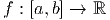
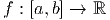
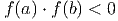
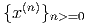

Solução. A matriz completa do sistema é
 |
Encontramos 1∕2z = 1∕2, ou seja, z = 1. Substituímos na segunda equação e temos y + 2z = 1, ou seja, y = -1 e, finalmente 2x + y - z = 0, resultando em x = 1. ♢
Lembramos que algumas operações feitas nas linhas de um sistema não alteram a solução:
O processo que transforma um sistema em outro com mesma solução, mas que apresenta uma forma triangular é chamado eliminação Gaussiana. A solução do sistema pode ser obtida fazendo substituição regressiva.
Solução. A matriz completa do sistema é escrita como
|
|
Encontramos -z = -1, ou seja, z = 1. Substituindo na segunda equação, temos -y - 3z = -2, ou seja, y = -1 e finalmente x + y + z = 1, resultando em x = 1. ♢
A Eliminação Gaussiana com pivotamento parcial consiste em fazer uma permutação de linhas de forma a escolher o maior pivô (em módulo) a cada passo.
Solução. A matriz completa do sistema é
|
|
Encontramos 1∕2z = 1∕2, ou seja, z = 1. Substituímos na segunda equação e temos y + 2z = 1, ou seja, y = -1 e, finalmente 2x + y - z = 0, resultando em x = 1. ♢
Solução. Construímos a matriz completa:

Exemplo 4.1.4 (Problema com elementos com grande diferença de escala).
Temos
Observe que a expressão obtida para y se aproximada de 2 quando ε é pequeno:
Assim, quando ε é pequeno, a primeira expressão, implementado em um sistema de ponto flutuante de acurácia finita, produz y = 2 e, consequentemente, a expressão para x produz x = 0. Isto é, estamos diante um problema de cancelamento catastrófico.
Agora, quando usamos a Eliminação Gaussiana com pivotamento parcial, fazemos uma permutação de linhas de forma a escolher o maior pivô a cada passo:
 
" class="math-display" >

" class="math-display" >Continuando o procedimento, temos:
Observe que tais expressões são analiticamente idênticas às anteriores, no entanto, são mais estáveis numericamente. Quando ε converge a zero, y converge a 2, como no caso anterior. No entanto, mesmo que y = 2, a segunda expressão produz x = 3 - εy, isto é, a aproximação x ≈ 3 não depende mais de obter 2 - y com precisão.  